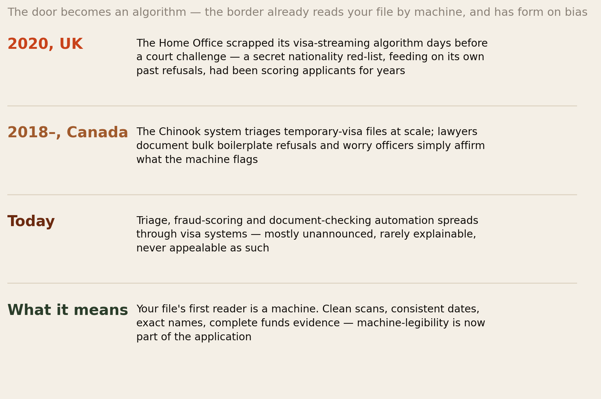
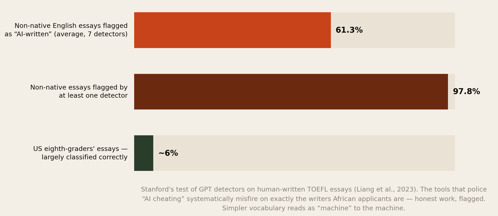
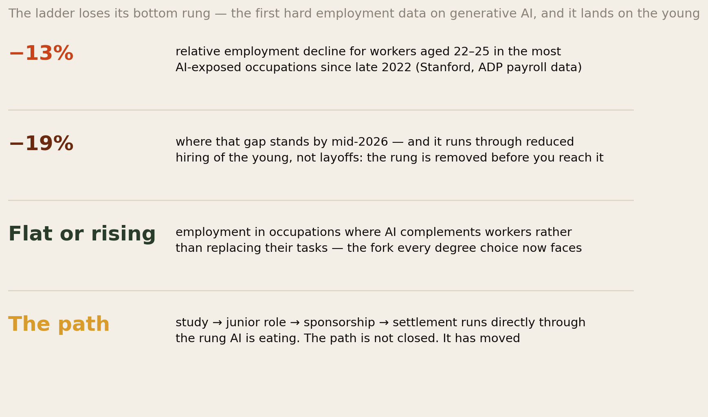
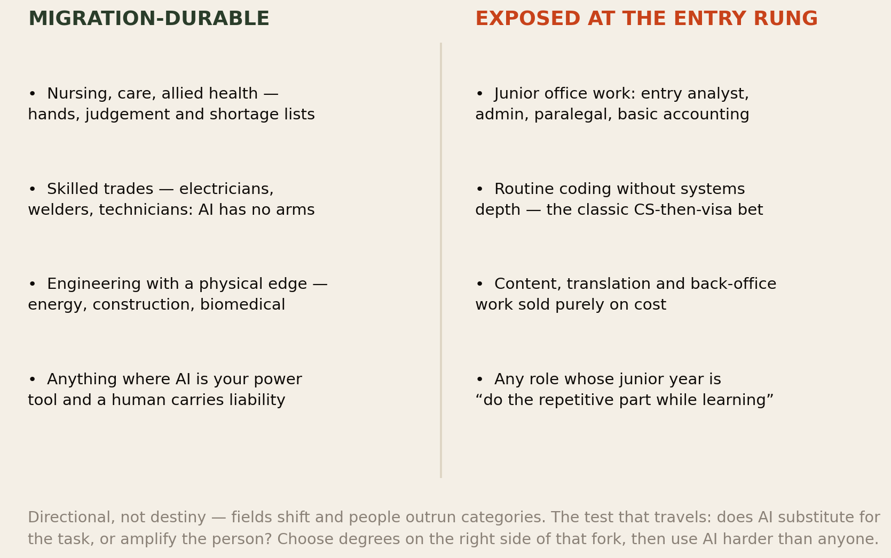
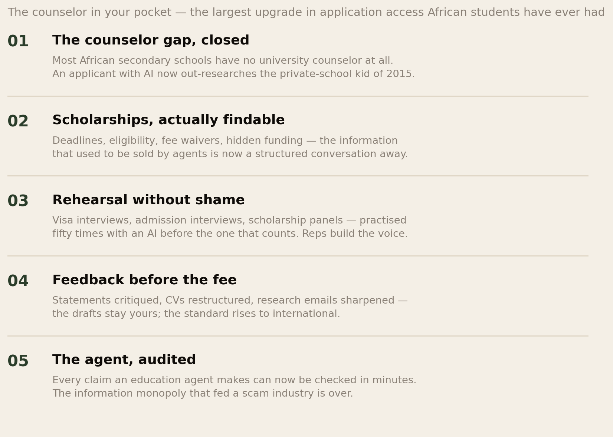
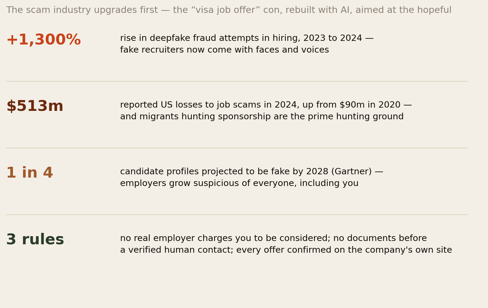
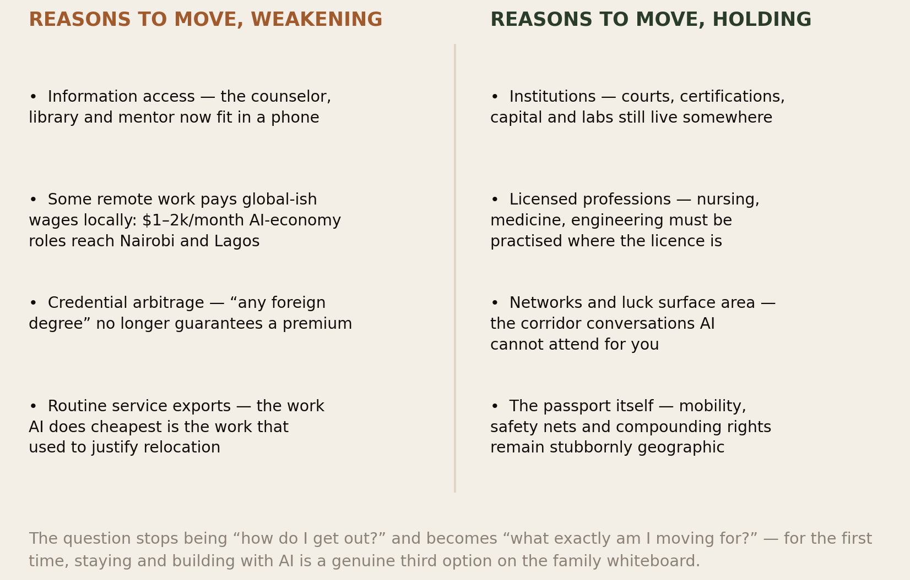
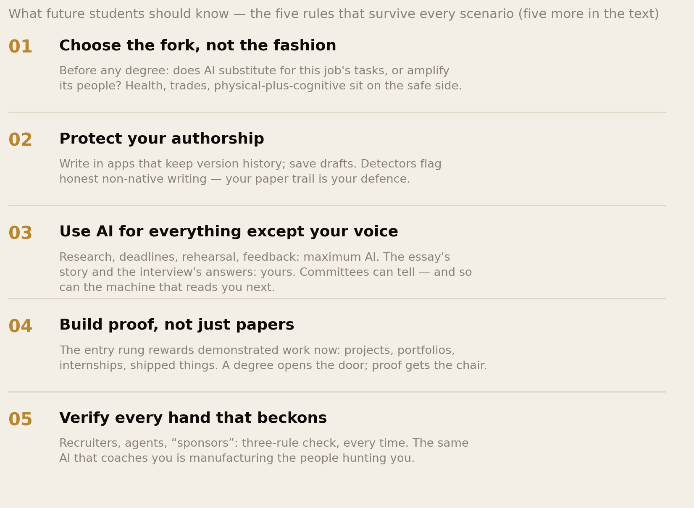

The Algorithm at the Border.
The journey abroad that built this diaspora — apply, fly, study, work, settle — is being rewritten at every stage by AI. The visa file’s first reader is now a machine with a documented history of bias. The detectors policing “AI cheating” falsely flag 61% of honest non-native English essays. The junior jobs the study-to-settlement path runs through are down 19% for young workers in AI-exposed fields. And the same technology hands an applicant in Kisumu the best counselor, rehearsal room and research assistant any African student has ever had. This report maps the new terrain — and gives future students and their families the rules that survive it.
Section 01The Short Version
Every family in this network runs the same project at least once a generation: get one promising person through the door — admission, visa, degree, first job, papers. That pipeline was engineered for a world of human readers, human recruiters and human gatekeepers. That world is ending mid-project. Here is what the evidence says is replacing it:
- The border already reads by machine, and its record is not neutral. The UK scrapped its visa-streaming algorithm in 2020 days before a court challenge — it carried a secret nationality red-list feeding on its own past refusals. Canada’s Chinook triages temporary-visa files at scale amid documented concerns about bulk boilerplate refusals. The lesson is not paranoia; it is preparation: your file’s first reader is software, so machine-legibility is now part of the application.
- The tools policing “AI cheating” misfire on exactly our writers. Stanford researchers found GPT detectors falsely flagged 61.3% of human-written TOEFL essays as AI-generated — 97.8% were flagged by at least one detector — while classifying US students’ essays correctly. Simpler vocabulary reads as “machine” to the machine. African applicants face a double bind: use AI and risk misconduct; write honestly and risk being flagged anyway. The defence is a paper trail (Section 03).
- The ladder’s bottom rung is measurably eroding. The first hard payroll-data study of generative AI (Stanford, ADP data) found employment for workers aged 22–25 in the most AI-exposed occupations down 13% relative to peers — a gap near 19% by mid-2026 — driven by reduced hiring, and concentrated where AI substitutes for tasks. The classic migrant route — study, junior role, sponsorship, settlement — runs directly through that rung. The route is not closed. It has moved (Sections 04–05).
- The same technology is the biggest access upgrade African applicants have ever had — a counselor, scholarship scout, interview coach and statement editor in every pocket, on a continent where most schools never had a counselor at all — and simultaneously the scam industry’s best tool ever: deepfake hiring fraud up 1,300% in a year, half a billion dollars in reported job-scam losses, a quarter of candidate profiles projected fake by 2028. Both faces are real. Learn both.
- The deepest change is to the question itself. With $1,000–$2,000/month remote AI-economy roles reaching Nairobi and Lagos, credential arbitrage dying, and information gaps closing, “how do I get out?” is giving way to “what exactly am I moving for?” — and for the first time, staying and building with AI is a genuine third option on the family whiteboard. The ten rules in Section 10 are written to survive every version of the answer.
AI did not close the door abroad. It changed the locks — and handed out the picks unevenly. This report is about ending up on the right side of that distribution.
Section 02The Door Becomes an Algorithm

Start at the consulate, because the automation arrived there before anywhere else — and its track record is on file. For years the UK Home Office streamed visa applications with an algorithm that assigned risk partly by a secret list of nationalities; past refusals fed the risk scores that produced future refusals — a feedback loop laundering old bias as new data — until legal pressure from Foxglove and JCWI forced it to be scrapped in August 2020. Canada’s Chinook system, processing temporary-visa files since 2018, is officially “just” a productivity tool — and immigration lawyers document surging boilerplate refusals and worry that officers rubber-stamp what the triage flags. Our own visa research and the African-student refusal-rate disparities it covered predate all this; the algorithms did not invent the bias. They industrialised its throughput.
What does a future applicant do with this? Three things. Write for two readers: the human officer and the machine before them — clean scans, exact name spellings consistent across every document, dates that reconcile, funds evidence complete and legible; a file that parses cleanly never gifts the triage a reason. Assume no benefit of the doubt: automation punishes ambiguity hardest, so the gap year, the sponsor’s relationship, the unusual bank movement each get one clear written sentence of explanation rather than hope. And know the appeal culture of your destination: a refusal generated in thirty seconds can take a year to overturn — corridor choice (some systems are more automated and less accountable than others) is now part of choosing a country at all.
Section 03The Essay Nobody Believes

Now the finding every future student and every lecturer marking them should have pinned above the desk. Stanford researchers ran seven widely used GPT detectors over human-written TOEFL essays by non-native English speakers, and over essays by US eighth-graders. The American children’s work passed cleanly. The non-native writers’ honest work was flagged as AI-generated 61.3% of the time on average — and 97.8% of the essays were flagged by at least one detector. The mechanism is brutal in its simplicity: detectors read low “perplexity” — plainer vocabulary, more predictable phrasing — as machine writing, and disciplined, careful, second-language English is exactly that. International students are already being accused on this evidence — misconduct hearings, revoked offers, scholarships questioned.
This puts the African applicant in a double bind nobody designed and nobody owns: submit AI-polished work and risk genuine misconduct; submit your honest voice and risk being flagged as a machine anyway. The defence is the paper trail. Write statements and essays in tools that keep version history (a cloud document’s edit log is a forensic record of human authorship); keep early drafts; be ready to discuss your essay’s content fluently, because the interview about it is the one detector that works. And a quiet strategic note our voice research makes poignant: the personal statement’s job is to sound like a person — specific, lived, unpolishable detail is now not just good writing advice but an authentication strategy. The story only you could tell is the watermark no detector questions.
Section 04The Ladder Loses Its Bottom Rung

For decades the African journey abroad has had one canonical shape: study → graduate job → sponsorship → settlement. Note what that path physically consists of: entry-level knowledge work — the junior analyst seat, the trainee accountant, the first coding job. Now the data. Using payroll records from ADP (the largest US payroll provider), Stanford’s Digital Economy Lab found that since late 2022, employment for workers aged 22–25 in the most AI-exposed occupations has fallen 13% relative to peers in less-exposed work — a gap that had widened to roughly 19% by mid-2026. Three details matter more than the headline. It operates through reduced hiring, not layoffs — the rung is removed before you reach it, invisibly. It is concentrated where AI substitutes for the job’s tasks; where AI complements workers, employment is flat or rising. And it barely touches experienced workers — whose expertise the junior years were supposed to build.
Read that against the migrant’s specific position and the stakes sharpen. The graduate visa gives you a fixed window — two years in the UK, one to three elsewhere — to convert a degree into a sponsored job; our graduate-market research already showed that window narrowing. The rung erosion narrows it further, and the name discount compounds at the same gate. This is the single most important planning fact in this report: the path is not closed — but the degree-to-anywhere bet, where any credential from abroad converted into any office job, is over. What replaces it is the fork in the next section.
Section 05The Jobs That Still Move

The question every degree choice must now pass is the one the Stanford data validates: does AI substitute for this job’s tasks, or amplify its people? On the durable side sit the jobs the world cannot do to itself by API: nursing, care and allied health (hands, judgement, and shortage lists that write visas); the skilled trades — electricians, welders, HVAC techs — in chronic shortage across ageing Europe; engineering with a physical edge (energy, construction, biomedical); and every role where AI is the professional’s power tool while a human carries the licence and the liability — the pattern under medicine, law’s senior end, and complex operations. On the exposed side: junior office work of every flavour, routine coding without systems depth, and any service sold to the world purely on labour cost — which, note carefully, includes some of the outsourcing work that African economies were counting on inheriting.
Two nuances keep this honest. First, fields are not fates — a “durable” nursing career still requires passing the licensing maze our careers series maps, and an “exposed” CS degree held by someone who builds real systems with AI is stronger than ever; the fork selects task-mixes, not titles. Second, the exposed column is where the entry rung erodes — senior people in those same fields are fine, which means the strategic question for a student is: can I reach the experienced tier of this field before the junior tier finishes disappearing — and what proof will carry me across? Section 10 turns that into practice.
Section 06The Counselor in Your Pocket

Now the other face, and this report insists on its full weight. The historic disadvantage of the African applicant was never talent; it was information asymmetry — no school counselor (most African secondary schools have none), no alumni network abroad, no one to say that fee waivers exist, that this SOP opens weak, that the “agent” charging three months’ salary is selling free forms. That asymmetry fed an entire predation economy. AI collapses it. A student in Kisumu with a phone can now research programmes and funding like a private-school applicant of 2015 with a paid consultant; rehearse the visa interview fifty times before the one that counts (reps, as our confidence research showed, are how self-belief is actually built); get draft-by-draft feedback that raises work to international standard while the words stay theirs; and fact-check every claim an education agent makes, in minutes, killing the information monopoly the scam industry fed on.
The rules for using the counselor without triggering Section 03’s trap: AI for everything except your voice. Research, deadlines, checklists, mock interviews, critique — maximum. The final wording of the essay that carries your story, the answers you give a visa officer, the person the committee meets — yours, verifiably (drafts, versions, fluency in your own file). The applicants who win the next decade are not the ones who use AI most or least. They are the ones who use it in exactly the right places — and our help-seeking research adds the cultural note: for a community trained not to ask, an advisor that costs nothing, judges nothing and tells nobody is the lowest-shame ask that has ever existed. Use it like the diaspora resource it is.
Section 07The Scam Industry Upgrades First

Every migration corridor has always had its predators — the fake agent, the “visa job offer”, the recruiter who evaporates after the fee. AI is their upgrade cycle: deepfake fraud attempts in hiring rose ~1,300% in a single year; US job-scam reports passed 105,000 in 2024 with losses over $513 million, nearly six times 2020; Gartner projects one candidate profile in four will be fake by 2028. The kit is cheap and complete: cloned voices of “HR managers”, video interviews with faces that do not exist, offer letters typeset better than the real company’s, entire agency websites hallucinated in an afternoon. And the aimed-at population is precisely ours — people hungry for sponsorship, unfamiliar with the destination’s norms, and culturally trained (as our shame research keeps finding) not to admit being fooled, which is why the same families are harvested twice.
The defence fits on a card, and it is deliberately boring. No legitimate employer or university ever charges you to be considered — application fees for jobs, “visa processing deposits”, “interview guarantee fees” are the scam, full stop. No documents before verification: your passport scan and bank details wait until you have independently confirmed the human — found the company’s real website yourself (not via their link), called the listed number, found the job on the company’s own careers page. Slow is the tell: every scam manufactures urgency, because urgency is the off-switch for verification; a real opportunity survives 48 hours of checking. And the community layer, in the spirit of Section 11 of the asking report: post the offer in the group chat before paying anything, not after — a “is this real?” channel is among the cheapest life-saving infrastructure a diaspora network can run, and this Forum runs one.
Section 08Do You Still Need to Move?

The heretical question, asked honestly. Some of migration’s classic drivers are genuinely weakening. The information advantage of being abroad — the libraries, the mentors, the exposure — now substantially fits in a phone. Remote AI-economy work reaches African cities at once exploitative and unprecedented scales: Kenya’s annotation-and-BPO sector runs from $2/hour trauma-laden labelling (the honest part of this story) to structured $1,000–$2,000/month remote roles open to Kenya, Nigeria and Ghana — salaries that beat many local graduate jobs without a single visa queue — while African developers increasingly sit on global teams from Lagos and Kigali. And the credential-arbitrage era is closing: “any foreign degree” no longer converts automatically into premium or position, as our cost-and-debt research was already finding before AI accelerated it.
But hold the other column with equal honesty, because the case for moving has not dissolved — it has specified. Institutions still live somewhere: the lab, the teaching hospital, the courtroom, the capital markets, the certification bodies. Licensed professions must be practised where the licence is — you cannot remote-nurse a German ward from Nakuru. Networks and luck surface-area — the corridor conversations, the professor who remembers you, the rooms where relational attention pays — do not videoconference. And the passport itself remains stubbornly geographic: mobility, safety nets, and rights that compound for your children. The conclusion this report stands behind: “abroad” has stopped being a goal and become a tool — the family whiteboard now has three honest options (go, stay-and-build, or sequence both), and the next two sections are the decision aids.
Section 09The Two Readers of Your Name
One more gate deserves its own section, because our library measured its human version already. The Name on the CV documented three decades of correspondence studies: identical CVs, African names, half the callbacks. Now the screening is increasingly algorithmic — and the question is which way that cuts. The pessimistic case has receipts: models trained on decades of biased hiring decisions learn the bias as signal (the canonical example remains the recruiting tool scrapped after it taught itself to penalise women’s CVs); an algorithm rejecting at scale can do in an afternoon what a thousand prejudiced screeners did in a year, with no one accountable and nothing to appeal. The UK visa algorithm of Section 02 is the same story at a different desk.
The optimistic case is also real, and worth engineering toward: a machine reads structure, not melanin — a well-audited screening system can be blinder than the humans it replaced, and structured, keyword-legible CVs mean the qualified application at least reaches the ranking instead of dying at a glance from a tired screener. Practical consequences for our applicants now: format for the parser (standard headings, real keywords from the posting, no CV-in-a-graphic); expect and pre-empt automated knockouts (every requirement explicitly evidenced); and treat referrals as the algorithm bypass they are — the human-vouched candidate skips the machine gate entirely, which makes the network-building ask more valuable in the AI era, not less. The old game was surviving one biased reader. The new game is being legible to two.
Section 10What Future Students Should Know

The chart carries the first five. The other five:
- 6. Aim past the entry rung. Plan your study years to graduate above junior: internships, research assistantships, shipped projects, a portfolio that proves you already do the work AI-assisted. In a market that under-hires the inexperienced, arrive pre-experienced.
- 7. Put licensing on the durable path. If your field has a licence (health, engineering, trades, teaching), the licence is the moat AI cannot cross and the visa list loves — start the credential-recognition maze before you fly, not in year three. The two-week rule applies to the conversion paperwork from day one.
- 8. Choose corridors, not just countries. Weigh a destination’s automation-and-appeal culture, its post-study work window against the rung erosion, and its shortage lists — our country comparison plus this report is the homework.
- 9. Keep your African network warm — it is now an asset, not a fallback. With the stay-and-build option real and return migration rising, the classmates in Nairobi and Accra are your future co-founders and clients. The diaspora advantage of the next decade is being bilingual in both economies.
- 10. Own the story AI cannot write. Your specific life — the market stall, the blackout-studied exams, the reason you chose this field — is simultaneously your essay’s watermark (Section 03), your interview’s spine, and the one input to your career no model has in training data. Guard it, tell it yourself, and never outsource it.
Section 11What Parents and Sponsors Should Know
Because in our families the student rarely decides alone, and the harambee that funds the ticket deserves its own briefing. The investment logic has inverted: field now beats destination. A decade ago, “get them to any university abroad” was a rational bet; today a nursing or engineering path at a modest institution beats a generic business degree at a famous one, because the rung the generic degree fed into is the one AI is eating. Before the family funds anything, ask the fork question of the intended career — substitute or amplify? — and treat a recruiter’s or agent’s answer as marketing until verified (Section 06 makes verification free). Budget for the licence, not just the degree — the conversion exams and registration fees that turn a qualification into employability are the tranche families most often fail to plan, and the one that strands graduates in survival jobs. Assume the payback horizon has lengthened: the worth-it timeline we measured stretches when first jobs come harder — a family that expects remittances in year one puts the student in the exact vice our black-tax research priced. And take the stay-and-build option seriously enough to price it: the same tuition sum, deployed behind a determined young person with AI leverage in Nairobi or Kigali, is no longer an obviously worse bet. That sentence would have been irresponsible in 2015. It is due diligence now.
Section 12The African Advantage
Zoom out and the board is not tilted the way the anxiety suggests. Africa is the youngest continent on earth — median age about nineteen — entering the AI era with the fewest legacy systems to defend and the deepest bench of exactly the demographic that adopts new tools fastest. We have run this play before: the continent that skipped landlines for M-Pesa, skipped branch banking for mobile money, and skipped desktop for the phone-first internet is structurally practised at leapfrogging — and AI is the most leapfroggable technology yet, because its capital requirement is a connection and its interface is language. The African AI landscape we mapped — the labs, the startups, the annotation workforce climbing the value chain from labelling toward building — is the early infrastructure of that jump.
And the diaspora’s position in it is the report’s closing reframe. The person who studies abroad in the AI era, learns the frontier, and stays bilingual in both economies is not a brain drained — they are a bridge with compound interest: the nurse who trains in Manchester and teleconsults for Mombasa; the engineer who ships for a Berlin firm and co-founds in Kigali; the student who arrives with the counselor-in-pocket and leaves as the counselor for fifty cousins. Every previous technology wave reached Africa last, priced for others. This one is in a phone in Kisumu on launch day, speaks Swahili, and answers questions at 2 a.m. for free. The generation deciding whether to move is the first with that ally on the way up — and, used the way this report describes, it is the difference between entering the new world as its cheapest labour or as its newest builders.
Section 13The Uncomfortable Part
First: the era of the credential shortcut is over, and some of the family playbook dies with it. For two generations, “a degree from abroad” was itself the asset — the arbitrage that justified any sacrifice. That arbitrage is closing from both ends: AI erodes the jobs generic credentials fed, and employers price proof over paper. Families still selling land for a master’s-any-master’s are buying the previous war’s weapon. The sacrifice logic survives; the target must move — to licensed fields, to proof-building, to the fork’s right side. Saying this plainly to a parent mid-dream is hard. It is also this report’s job.
Second: our own shortcuts feed the machine that flags our honest kids. Every AI-fabricated application, ghost-written SOP and bought reference from our corridors trains the suspicion systems — and Section 03 showed who those systems then misfire on: the honest non-native writer. The agent industry’s pivot to “AI application packages” is not a victimless upgrade; it is borrowing against the credibility of every applicant who shares your passport. The community that polices its own scammers — and refuses the tempting fake — is doing border policy for its own children.
Third: AI changes the odds, not the politics. No prompt fixes a visa quota, a red list, or the name discount; the algorithms of Section 02 encode the politics that built them, and the counselor in your pocket does not sit on the appeals board. This report has deliberately shown both faces — the leveller and the gatekeeper — because the failure modes are symmetrical: despair that ignores the new tools, and hype that ignores the old walls. The strategy that survives both is the boring one this library always lands on: use every tool fully, count every cost honestly, and build with witnesses — which is, not coincidentally, what a Forum is for.
Section 14Method & Limits
This report combines documented cases of migration automation, the first payroll-data studies of generative AI’s employment effects, AI-detection research, and fraud statistics, as at 8 September 2026 — with a larger-than-usual caution flag, because it is partly a futures report.
- This is the most forward-looking report in this library, and it will age fastest. Where our other reports describe measured pasts, Sections 04–05, 08 and 11–12 extrapolate from early data in a fast-moving field. We have marked directional claims as directional and kept the advice to rules that survive multiple scenarios.
- The border-automation cases are documented (the UK streaming tool’s 2020 withdrawal under legal challenge; Chinook’s operation and the concerns recorded by the immigration bar), but governments disclose little; the “spreading everywhere” claim rests on official procurement records and legal commentary, not a comprehensive audit.
- The detector-bias findings (61.3% average false-positive on TOEFL essays; 97.8% flagged by at least one of seven detectors; US eighth-grade essays largely classified correctly) are from Liang et al. (2023), Patterns. Detectors have iterated since; independent evaluations continue to find elevated false-positive rates for non-native writers, and the structural mechanism (low perplexity) is unchanged. Turnitin specifically was not in the study.
- The employment findings are from Brynjolfsson, Chandar & Chen’s “Canaries in the Coal Mine” (Stanford Digital Economy Lab; ADP payroll data): a 13% relative decline for ages 22–25 in the most AI-exposed occupations, updated to a ~19% gap by mid-2026. It is US data, one (large) payroll provider, and measures relative — not absolute — decline; European graduate markets, where more of our readers land, are assumed to rhyme rather than measured here.
- The scam figures (deepfake hiring fraud +~1,300% 2023–24; 105,000+ FTC job-scam reports and $513m losses in 2024; Gartner’s 1-in-4 fake-profile projection for 2028) come from industry and regulator reporting of varying rigour; we use them for scale and direction. The three defence rules do not depend on the numbers.
- The remote-work figures ($2/hour annotation labour alongside $1,000–$2,000/month structured remote roles; Kenya’s BPO job growth) reflect a market documented as simultaneously exploitative and opportunity-bearing; both halves are cited because both are true.
- Sections 09–12 are interpretive syntheses connecting this report’s data to our library’s measured findings (the CV name studies, the graduate-window research, the worth-it timeline, the black-tax arithmetic), labelled as argument. The ten rules are judgement built on the cited evidence, not themselves study findings.
- Disclosure, in this report above all: AI was used in the production of this research — for search, drafting and chart generation — under the editorial process, source-verification and honest-limits standards this library applies to every report. We hold the position we recommend: maximum tool, human voice, receipts kept.
Principal sources: Foxglove/JCWI on the UK visa-streaming algorithm and contemporary reporting; International Bar Association on Chinook; Liang et al. (2023) on GPT-detector bias and The Markup’s reporting on accused international students; Brynjolfsson, Chandar & Chen, “Canaries in the Coal Mine” and the lab’s 2026 update; FTC job-scam data and Gartner projections via industry reporting; Qhala on African data workers; and this library’s prior measurement in the CV, visa, student-cost, graduate-market and AI-landscape reports.
Companion reports: The Name on the CV, The Visa Treadmill, Best Countries for African Students, The Graduate Job Market, The African AI Landscape and How Long Until It Was Worth It?
The diaspora helps the diaspora.
Africa Global Forum is a peer network for Africans abroad — help each other, sit together, and bounce ideas. This research is part of an open library, free to read and share.